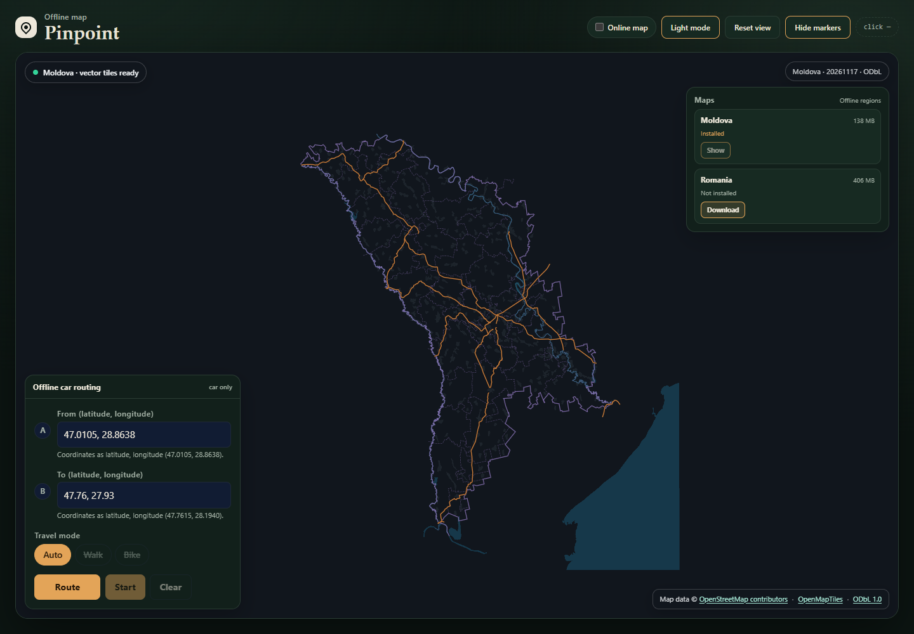
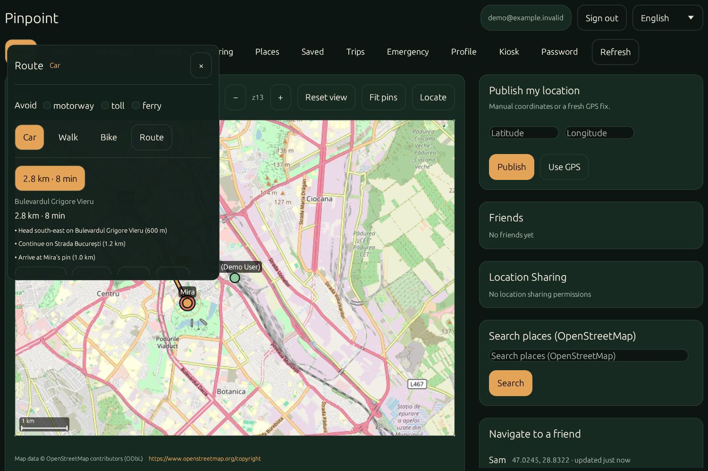
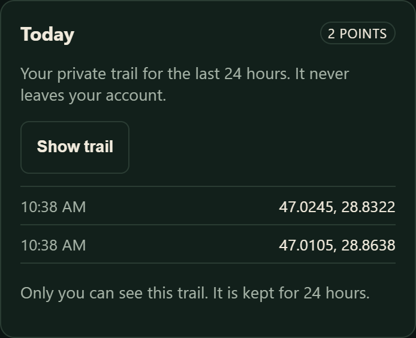
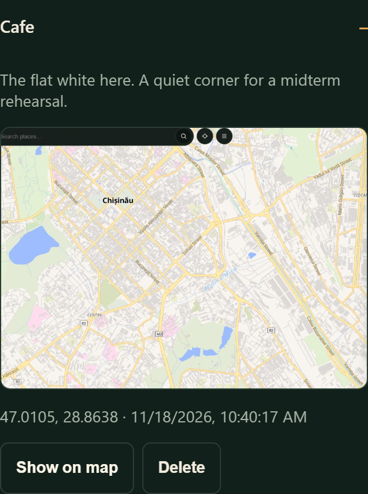
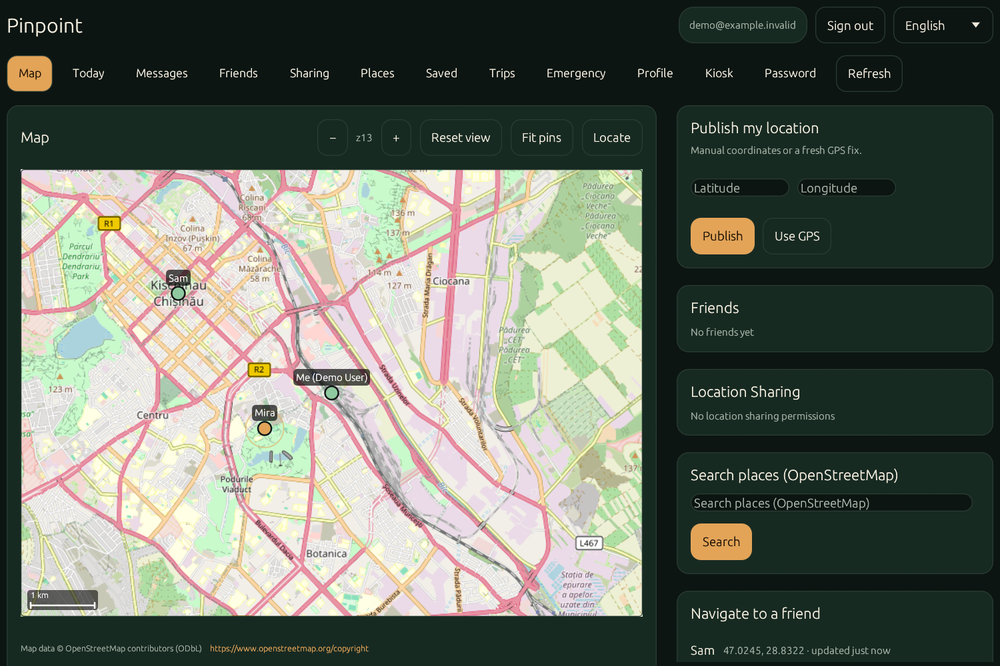
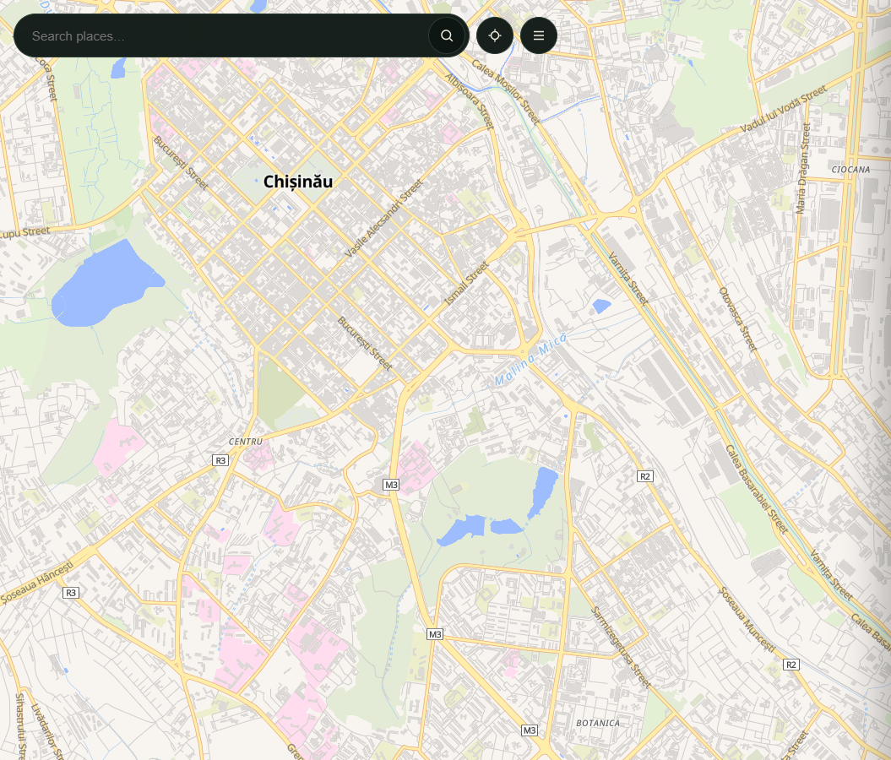

Pinpoint
Sharing became permanent by default.
Friend = full access
Once accepted, the other person can often watch you indefinitely.
Stale looks live
A dead phone still leaves a dot on the map, with no honest freshness state.
Control is buried
Pausing, narrowing precision or revoking is hard to find and easy to miss.
A share is a decision, not a friendship.
Directional
Alice → Bob never implies Bob → Alice.
Precision
Exact, approximate or city only; the server applies it on read.
Time + control
Expiry, pause, resume, revoke; rejected or expired shares fail closed.
Friendship alone shows nothing. No arrow is the default.
One Rust core, three clients, one consent contract.
Identity
Email registration, Argon2id, opaque sessions, revoke, delete account.
Friends
Request by handle, accept/reject, remove. Emails are not searchable.
Consent sharing
Exact / approximate / city, 1 h, pause, resume, revoke, live state.
Map
OpenFreeMap, OSM search, Chișinău → Bălți route, saved places.
Offline
Moldova pack in OPFS, offline map + search; native graph routing.
Today + notes
Private 24 h trail; private text/photo notes on the map.
Server-side enforcement, never the client.
Web
ES modules · MapLibre · PMTiles
Desktop
Rust · eframe/egui
Android
same Rust core · signed APK
↓ session + CSRF ↓
Rust API · Axum
/api/v1 · validation · authorization · account lockout
↓
PostgreSQL
users · sessions · friendships · shares · locations · trail · notes
Edges
- OpenFreeMap — opt-in online tiles
- Nominatim / OSRM — search and driving routes
- pinpoint-maps — country packs, hashes, range serving
- No trackers, no third-party scripts
Plain HTTP is loopback-only; production is HTTPS.
The server re-checks consent on every read.
Every friend-location read re-checks the share row: owner, direction, active flag, expiry and precision.
A country pack, not a mock.


The personal side of the map.


Same core, same consent rules.

Today tab with the trail and text notes. Photos remain web-only in this build.
Evidence, not claims.
| Gate | Coverage | Result |
|---|---|---|
| Rust gate | fmt · clippy -D warnings · build · test | pass |
| Consent | friendship ≠ consent · exact precision · pause/revoke · expiry · owner-only | 10/10 |
| Today / notes | owner-only trail and notes · validation · 401 | 2/2 |
| Contract / assets | CSRF · owner paths · CSP · no API cache | 22/22 |
| Offline | install · map offline · local search | 7/7 manual |
| Artifact | APK signature, versionCode, ABIs | verified |
Two friends, one consent story.
- Sign in as A; show the online map and the Chișinău → Bălți route.
- B shares exact for 1 hour, confirms the summary.
- A refreshes: exact point is visible.
- B pauses → A sees nothing; B resumes → back; B revokes → gone.
- A: Today trail + private photo note.
- A: go offline (no reload), map + search Bălți.
- Close on the phone Today tab.
Full steps and fallbacks: Demo-Script.md

© OpenStreetMap contributors · tiles by OpenFreeMap
Explicit edges, honest next steps.
Known limits
- Admin demo needs DB promotion; no seeded admin.
- MFA login works; web enrolment is not built.
- Offline web routes are not built.
- Native photos are not built.
- Trail = explicit publishes, not background GPS.
- Audit: 9 unmaintained/unsound deps accepted.
- Cookie
Secure/HSTS and API headers are missing.
Next
- Admin bootstrap without SQL.
- Web MFA + account recovery.
- Friend-visible notes with per-note consent.
- Offline web routing.
- Mobile photo picker.
- Targeted queries + load test; deterministic CI.
- Per-IP auth limits; cookie/HSTS hardening.
- Replace chrono; shrink audit ignores.
the product.
Explicit, directional, precise by choice, revocable - and enforced by the server.
https://pinpoint-uj4y.onrender.com
Questions?